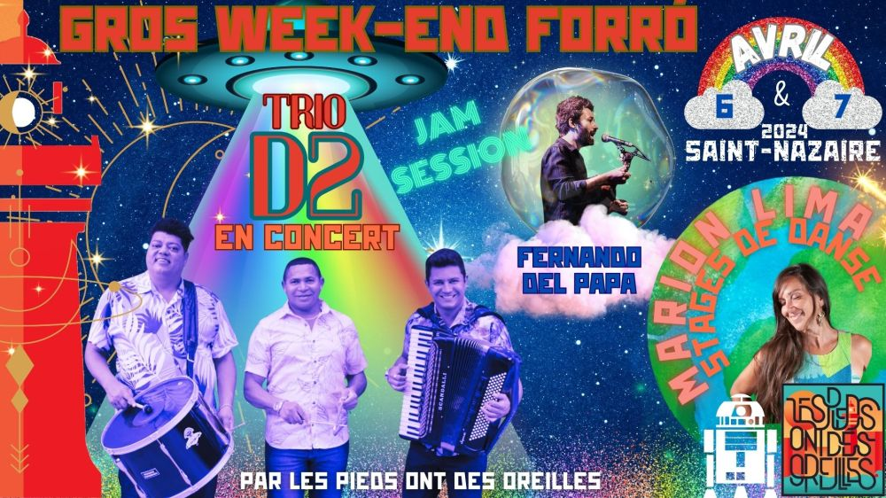

Gros Week-end Forró avec Trio D2, Fernando Cavaco et Marion Lima

En bref, CONCERT IMMANQUABLE de TRIO D2 le samedi soir, JAM SESSION FORRO avec FERNANDO CAVACO le dimanche soir et STAGES de danse avec MARION LIMA samedi et dimanche !
★★★ PROGRAMME ★★★
🥁 GROS SAMEDI avec le 🚀 groupe brésilien Trio D2 🚀en tournée européenne 🤩 Ils seront à Londes, Porto, Paris… et Saint-Nazaire 😜
Trio D2 est un projet très récent, mais les 3 musiciens qui le composent sont 3 pointures connus dans le monde entier depuis très longtemps.
Ils ont joué avec les plus grands (Elba Ramalho, Dominguinhos, Tiziu do Araripe, Azulão…) et dans les groupes forró les plus renommés (os 3 do nordeste, forró juriti entre autres).
Donc… CONCERT À NE RATER SOUS AUCUN PRETEXTE !
🪗 GROS DIMANCHE avec une jam session inédite: l’artiste brésilien Fernando Cavaco sera avec nous le dimanche et dirigera la jam. Musiciens de forró, improvisateurs, percussionnistes, bassistes, soufflants et autres instrumentistes, rejoignez-nous !
💃 Pour le côté danse, Marion Lima sera de retour avec nous pour de nouveaux stages, samedi et dimanche. Comme d’habitude, ça va être aussi intéressant que divertissant.
Et on innove: une MASTERCLASS réservée aux vieux de la vieille: au moins 5 ans de forró dans les pattes et une très maîtrise de la danse requise et STAGE POUR SALSERO !
SAMEDI 6 avril
👉 14h – 16h: masterclass de danse forró, avec Marion Lima (niveau avancé, 15€/stage)
Minimum de 5 ans de forró et bonne maîtrise requise dans son rôle de prédilection (leader ou follower). Inscription soumise à condition. Nous contacter.
👉 16h15 – 18h15: stage de danse niveau 2, avec Marion Lima (niveau intermédiaire/avancé, 15€/stage)
Minimum de 2 ans de forró et maîtrise du forró requise dans son rôle de prédilection (leader ou follower)
👉 20h30 à 1h: concert Forro D2 Trio
Concert à 21h30, initiation à la danse à 20h30 (12€). Café L’R du Temps.
DIMANCHE 7 avril
👉 11h – 13h: brunch forró, place du commando (gratuit, moment convivial, auberge espagnol)
👉 14h – 16h: stage de danse niveau 1, avec Marion Lima (niveau débutant, 15€)
6 mois de forró et maîtrise des pas de bases requis
👉 16h – 18h: stage de danse pour salseiro, avec Marion Lima (prix libre à partir de 5€)
Réservé aux danseurs avancés de salsa (minimum 2 ans de salsa)
👉 18h – 22h: jam session et bal forró, dirigée par Fernando Cavaco, à la P’tite Scène des Halles (entrée libre et consciente, faites au mieux, mais 10€ c’est l’idéal 😉)
★ QUELQUES VIDEOS
Trio D2
https://www.youtube.com/live/ATfByUE0paQ?si=3MQaqmnUvi4CQ3qQ
Fernado DelPapa
https://www.youtube.com/watch?v=AZ4q_YMfzKQ
https://www.youtube.com/watch?v=dBLDuMxRzHI
★ LES LIEUX
Salle de Kerfaouet pour les stages: 12B Rue des Pinsons, Saint-Nazaire
La P’tite Scène des halles pour la jam session: 14 Pl. du Commerce, Saint-Nazaire
L’R du temps pour le concert Trio D2: 6 Rue François Marceau, Saint-Nazaire
★ POUR VOUS LOGER
Contactez-nous pour du couchsurfing.
★ COVOIT: c’est ici !
https://docs.google.com/spreadsheets/d/18pup31706aoBu_PXvhgpxJNuN4yYGhuRcLZrT8erUIk/edit?usp=sharing
★CONTACT
07 63 47 55 85
06 60 40 15 17
lespiedsontdesoreilles@gmail.com
🥁🥁 FORRO D2
Hedran Barreto est accordéonniste et chanteur et a commencé sa carrière professioinelle à 10 ans.
Deda Silva est chanteur. Il joue aussi le triangle, l’instrument emblèmatique du forró.
Scurinho Zabumbada est l’un des meilleurs zabumbeiro du monde, et chanteur. Il est connu dans le monde entier, dans la communauté du forró.
🥁🥁 Fernando Cavaco
Fernando Del Papa est un artiste brésilien, musicien et compositeur. Son instrument de prédilection est le cavaquinho (petite guitare), d’où son nom de scène, Fernando Cavaco.
Il a passé 20 ans à Paris où il a développé le samba et le forró. Il fait partie de plusieurs groupes et a collaboré avec différents artistes reconnus (Mayra Andrade, Fabiana Cozza, Márcio Faraco, Vincent Ségal, Babx, David Linx, André Minvielle…). Il est retourné il y a peu vivre au Brésil, mais revient régulièrement en France pour des concerts, masterclass et autres projets.
De passage dans la région, nous profitons de sa présence pour animer un stage de musique brésilienne et la jam session du dimanche.
🥁🥁 Marion Lima
Marion est la référence en France en ce qui concerne la danse brésilienne et le forró en particulier.
En 2004, elle rencontre le forró et c’est le coup de foudre, elle se forme auprès de différents partenaires au Brésil, tels que le celèbre professeur Marinho Braz, mais également Felipe Soares, et Edj Braga.
Aujourd’hui Marion donne des cours à Paris, organise des stages en France, en Europe et au Brésil.
Elle sera parmi nous pendant 3 jours, pour nous transmettre son art, sa joie, sa bonne humeur et son énergie légendaire.
Até logo logo !